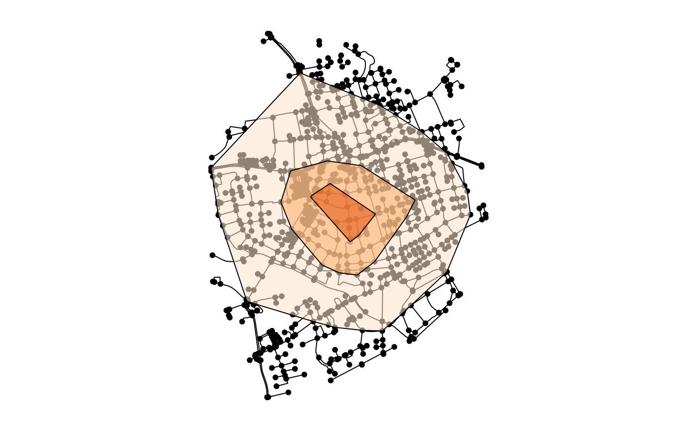

Isolines are curves along which a function has a constant value. In spatial networks, they are used to delineate areas that are reachable from a given node within a given travel cost. If the travel cost is distance, they are known as isodistances, while if the travel cost is time, they are known as isochrones. This function finds all network nodes that lie inside an isoline around a specified node.
Usage
st_network_iso(
x,
node,
cost,
weights = edge_length(),
...,
delineate = TRUE,
ratio = 1,
allow_holes = FALSE
)Arguments
- x
An object of class
sfnetwork.- node
The node around which the isolines will be drawn. Evaluated by
evaluate_node_query. When multiple nodes are given, only the first one is used.- cost
The constant cost value of the isoline. Should be a numeric value in the same units as the given edge weights. Alternatively, units can be specified explicitly by providing a
unitsobject. Multiple values may be given, which will result in multiple isolines being drawn.- weights
The edge weights to be used in the shortest path calculation. Evaluated by
evaluate_weight_spec. The default isedge_length, which computes the geographic lengths of the edges.- ...
Additional arguments passed on to
st_network_costto compute the cost matrix from the specified node to all other nodes in the network.- delineate
Should the nodes inside the isoline be delineated? If
FALSE, the nodes inside the isoline are returned as aMULTIPOINTgeometry. IfTRUE, the concave hull of that geometry is returned instead. Defaults toTRUE.- ratio
The ratio of the concave hull. Defaults to
1, meaning that the convex hull is computed. Seest_concave_hullfor details. Ignored ifdelineate = FALSE. Setting this to a value smaller than 1 requires a GEOS version of at least 3.11.- allow_holes
May the concave hull have holes? Defaults to
FALSE. Ignored ifdelineate = FALSE.
Value
An object of class sf with one row per requested
isoline. The object contains the following columns:
cost: The constant cost value of the isoline.geometry: Ifdelineate = TRUE, the concave hull of all nodes that lie inside the isoline. Otherwise, those nodes combined into a singleMULTIPOINTgeometry.
Examples
library(sf, quietly = TRUE)
oldpar = par(no.readonly = TRUE)
par(mar = c(1,1,1,1))
center = st_centroid(st_combine(st_geometry(roxel)))
net = as_sfnetwork(roxel, directed = FALSE)
iso = net |>
st_network_iso(node_is_nearest(center), c(1000, 500, 250))
colors = c("#fee6ce90", "#fdae6b90", "#e6550d90")
plot(net)
plot(st_geometry(iso), col = colors, add = TRUE)

# The level of detail can be increased with the ratio argument.
# This requires GEOS >= 3.11.
if (compareVersion(sf_extSoftVersion()[["GEOS"]], "3.11.0") > -1) {
iso = net |>
st_network_iso(node_is_nearest(center), c(1000, 500, 250), ratio = 0.3)
colors = c("#fee6ce90", "#fdae6b90", "#e6550d90")
plot(net)
plot(st_geometry(iso), col = colors, add = TRUE)
}
par(oldpar)